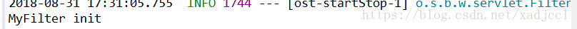
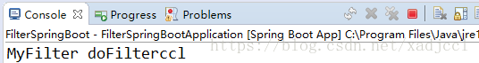
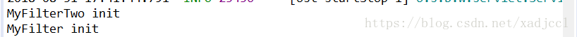
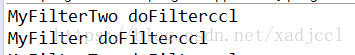
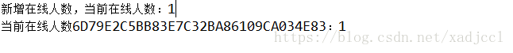
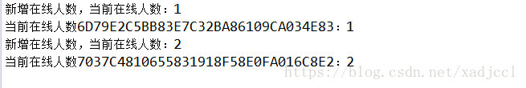
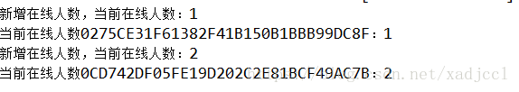

<!DOCTYPE html>
<html>
<head><meta name="generator" content="Hexo 3.8.0">
  <meta charset="utf-8">

  <!-- PACE Progress Bar START -->
  
    <script src="https://raw.githubusercontent.com/HubSpot/pace/v1.0.2/pace.min.js"></script>
    <link rel="stylesheet" href="https://github.com/HubSpot/pace/raw/master/themes/orange/pace-theme-flash.css">
  
  

  <!-- PACE Progress Bar START -->

  
  <title>(六)springboot过滤器、监听器和拦截器 | xadjccl</title>
  <meta name="viewport" content="width=device-width, initial-scale=1, maximum-scale=1">
  
  <meta name="keywords" content="SpringBoot">
  
  
  
  
  <meta name="description" content="概述&amp;#160; &amp;#160; &amp;#160; &amp;#160;该篇主要记录SpringBoot项目中如何使用 过滤器、监听器、拦截器。关于 过滤器、监听器和拦截器有过web开发经验的 同志们都知道，在web.xml中做相对应的配置，指定实现类即可。过滤器只能再web项目中使用，拦截器则都可以。过滤器和拦截器主要可以实现请求过滤，例如我们web项目判断一个请求之前要先拦截判断，是都有权限来访问，请求中是">
<meta name="keywords" content="SpringBoot">
<meta property="og:type" content="article">
<meta property="og:title" content="(六)SpringBoot过滤器、监听器和拦截器">
<meta property="og:url" content="http://yoursite.com/2019/01/29/(六)SpringBoot过滤器、监听器和拦截器/index.html">
<meta property="og:site_name" content="xadjccl">
<meta property="og:description" content="概述&amp;#160; &amp;#160; &amp;#160; &amp;#160;该篇主要记录SpringBoot项目中如何使用 过滤器、监听器、拦截器。关于 过滤器、监听器和拦截器有过web开发经验的 同志们都知道，在web.xml中做相对应的配置，指定实现类即可。过滤器只能再web项目中使用，拦截器则都可以。过滤器和拦截器主要可以实现请求过滤，例如我们web项目判断一个请求之前要先拦截判断，是都有权限来访问，请求中是">
<meta property="og:locale" content="zh-CN">
<meta property="og:image" content="http://yoursite.com/resource/image/SpringBootLogo.jpg">
<meta property="og:updated_time" content="2019-01-29T07:02:11.080Z">
<meta name="twitter:card" content="summary">
<meta name="twitter:title" content="(六)SpringBoot过滤器、监听器和拦截器">
<meta name="twitter:description" content="概述&amp;#160; &amp;#160; &amp;#160; &amp;#160;该篇主要记录SpringBoot项目中如何使用 过滤器、监听器、拦截器。关于 过滤器、监听器和拦截器有过web开发经验的 同志们都知道，在web.xml中做相对应的配置，指定实现类即可。过滤器只能再web项目中使用，拦截器则都可以。过滤器和拦截器主要可以实现请求过滤，例如我们web项目判断一个请求之前要先拦截判断，是都有权限来访问，请求中是">
<meta name="twitter:image" content="http://yoursite.com/resource/image/SpringBootLogo.jpg">
  
    <link rel="alternate" href="/atom.xml" title="xadjccl" type="application/atom+xml">
  
  <link rel="icon" href="/css/images/favicon.ico">
  
    <link href="//fonts.googleapis.com/css?family=Source+Code+Pro" rel="stylesheet" type="text/css">
  
  <link href="https://fonts.googleapis.com/css?family=Open+Sans|Montserrat:700" rel="stylesheet" type="text/css">
  <link href="https://fonts.googleapis.com/css?family=Roboto:400,300,300italic,400italic" rel="stylesheet" type="text/css">
  <link href="https://cdn.bootcss.com/font-awesome/4.6.3/css/font-awesome.min.css" rel="stylesheet">
  <style type="text/css">
    @font-face{font-family:futura-pt;src:url(https://use.typekit.net/af/9749f0/00000000000000000001008f/27/l?subset_id=2&fvd=n5) format("woff2");font-weight:500;font-style:normal;}
    @font-face{font-family:futura-pt;src:url(https://use.typekit.net/af/90cf9f/000000000000000000010091/27/l?subset_id=2&fvd=n7) format("woff2");font-weight:500;font-style:normal;}
    @font-face{font-family:futura-pt;src:url(https://use.typekit.net/af/8a5494/000000000000000000013365/27/l?subset_id=2&fvd=n4) format("woff2");font-weight:lighter;font-style:normal;}
    @font-face{font-family:futura-pt;src:url(https://use.typekit.net/af/d337d8/000000000000000000010095/27/l?subset_id=2&fvd=i4) format("woff2");font-weight:400;font-style:italic;}</style>
    
  <link rel="stylesheet" id="athemes-headings-fonts-css" href="//fonts.googleapis.com/css?family=Yanone+Kaffeesatz%3A200%2C300%2C400%2C700&amp;ver=4.6.1" type="text/css" media="all">
  <link rel="stylesheet" href="/css/style.css">

  <script src="https://code.jquery.com/jquery-3.1.1.min.js"></script>

  <!-- Bootstrap core CSS -->
  <link rel="stylesheet" href="https://netdna.bootstrapcdn.com/bootstrap/3.0.2/css/bootstrap.min.css">
  <link rel="stylesheet" href="/css/hiero.css">
  <link rel="stylesheet" href="/css/glyphs.css">
  

  <!-- Custom CSS -->
  <link rel="stylesheet" href="/css/my.css">
  <!-- Google Adsense -->
  
  <script async src="//pagead2.googlesyndication.com/pagead/js/adsbygoogle.js"></script>
  <script>
      (adsbygoogle = window.adsbygoogle || []).push({
          google_ad_client: "ca-pub-0123456789ABCDEF",
          enable_page_level_ads: true
      });
  </script>
  
</head>
</html>
<script>
var themeMenus = {};

  themeMenus["/"] = "首页"; 

  themeMenus["/archives"] = "归档"; 

  themeMenus["/categories"] = "分类"; 

  themeMenus["/tags"] = "标签"; 

  themeMenus["/about"] = "关于"; 

</script>


  <body data-spy="scroll" data-target="#toc" data-offset="50">


  <header id="allheader" class="site-header" role="banner">
  <div class="clearfix container">
      <div class="site-branding">

          <h1 class="site-title">
            
              <a href="/" title="xadjccl" rel="home"> xadjccl </a>
            
          </h1>

          
            
          <nav id="main-navigation" class="main-navigation" role="navigation">
            <a class="nav-open">Menu</a>
            <a class="nav-close">Close</a>
            <div class="clearfix sf-menu">

              <ul id="main-nav" class="nmenu sf-js-enabled">
                    
                      <li class="menu-item menu-item-type-custom menu-item-object-custom menu-item-home menu-item-1663"> <a class="" href="/">首页</a> </li>
                    
                      <li class="menu-item menu-item-type-custom menu-item-object-custom menu-item-home menu-item-1663"> <a class="" href="/archives">归档</a> </li>
                    
                      <li class="menu-item menu-item-type-custom menu-item-object-custom menu-item-home menu-item-1663"> <a class="" href="/categories">分类</a> </li>
                    
                      <li class="menu-item menu-item-type-custom menu-item-object-custom menu-item-home menu-item-1663"> <a class="" href="/tags">标签</a> </li>
                    
                      <li class="menu-item menu-item-type-custom menu-item-object-custom menu-item-home menu-item-1663"> <a class="" href="/about">关于</a> </li>
                    
              </ul>
            </div>
          </nav>


      </div>
  </div>
</header>


  <div id="originBgDiv" style="background: #fff; width: 100%;">

      <div style="max-height:600px; overflow: hidden;  display: flex; display: -webkit-flex; align-items: center;">
        
      </div>

  </div>

  <script>
  function setAboutIMG(){
      var imgUrls = "css/images/pose.jpg,https://source.unsplash.com/collection/954550/1920x1080".split(",");
      var random = Math.floor((Math.random() * imgUrls.length ));
      if (imgUrls[random].startsWith('http') || imgUrls[random].indexOf('://') >= 0) {
        document.getElementById("originBg").src=imgUrls[random];
      } else {
        document.getElementById("originBg").src='/' + imgUrls[random];
      }
  }
  bgDiv=document.getElementById("originBgDiv");
  if(location.pathname.match('about')){
    setAboutIMG();
    bgDiv.style.display='block';
  }else{
    bgDiv.style.display='none';
  }
  </script>


  <div id="container">
    <div id="wrap">
            
      <div id="content" class="outer">
        
          <section id="main" style="float:none;"><article id="post-(六)SpringBoot过滤器、监听器和拦截器" style="width: 66%; float:left;" class="article article-type-post" itemscope="" itemprop="blogPost">
  <div id="articleInner" class="clearfix post-1016 post type-post status-publish format-standard has-post-thumbnail hentry category-template-2 category-uncategorized tag-codex tag-edge-case tag-featured-image tag-image tag-template">
    
<div class="article-gallery">
  <div class="article-gallery-photos">
    
      <a class="article-gallery-img fancybox" href="/../../../../resource/image/SpringBootLogo.jpg" rel="gallery_cjrherck300006s9lalrham9h">
        
      </a>
    
  </div>
</div>

    
      <header class="article-header">
        
  
    <h1 class="thumb" itemprop="name">
      (六)SpringBoot过滤器、监听器和拦截器
    </h1>
  

      </header>
    
    <div class="article-meta">
      
	Posted on <a href="/2019/01/29/(六)SpringBoot过滤器、监听器和拦截器/" class="article-date">
	  <time datetime="2019-01-29T06:55:15.566Z" itemprop="datePublished">一月 29, 2019</time>
	</a>

      
	<span id="busuanzi_container_page_pv">
	  本文总阅读量<span id="busuanzi_value_page_pv"></span>次
	</span>

    </div>
    <div class="article-entry" itemprop="articleBody">
      
        <h1 id="概述"><a href="#概述" class="headerlink" title="概述"></a>概述</h1><p>&#160; &#160; &#160; &#160;该篇主要记录SpringBoot项目中如何使用 过滤器、监听器、拦截器。关于 过滤器、监听器和拦截器有过web开发经验的 同志们都知道，在web.xml中做相对应的配置，指定实现类即可。过滤器只能再web项目中使用，拦截器则都可以。过滤器和拦截器主要可以实现请求过滤，例如我们web项目判断一个请求之前要先拦截判断，是都有权限来访问，请求中是否带有合法的token等等功能。<a id="more"></a> </p>
<h1 id="过滤器"><a href="#过滤器" class="headerlink" title="过滤器"></a>过滤器</h1><p>首先创建一个SpringBoot项目。</p>
<h2 id="创建一个MyFilter-实现接口Filter"><a href="#创建一个MyFilter-实现接口Filter" class="headerlink" title="创建一个MyFilter  实现接口Filter"></a>创建一个MyFilter  实现接口Filter</h2><pre><code>@WebFilter(filterName = &quot;myFilter&quot;,urlPatterns = {&quot;/*&quot;})
public class MyFilter implements Filter {

    @Override
    public void init(FilterConfig filterConfig) throws ServletException {
        // TODO Auto-generated method stub
        System.out.println(&quot;MyFilter init &quot;);
    }

    @Override
    public void doFilter(ServletRequest request, ServletResponse response, FilterChain chain)
            throws IOException, ServletException {
        // TODO Auto-generated method stub
        HttpServletRequest req = (HttpServletRequest) request;
        System.out.println(&quot;MyFilter doFilter&quot;+req.getParameter(&quot;name&quot;));
        chain.doFilter(request, response);
        return ;
    }

    @Override
    public void destroy() {
        // TODO Auto-generated method stub
        System.out.println(&quot;MyFilter destroy&quot;);
    }

}
</code></pre><p>在该类上添加注解</p>
<p>@WebFilter(filterName = “myFilter”,urlPatterns = {“/*”})<br> 指定过滤器的名称和要过滤的地址。</p>
<h2 id="在入口的启动类上添加注解"><a href="#在入口的启动类上添加注解" class="headerlink" title="在入口的启动类上添加注解"></a>在入口的启动类上添加注解</h2><pre><code>@SpringBootApplication
@ServletComponentScan
public class FilterSpringBootApplication {

    public static void main(String[] args) {
        SpringApplication.run(FilterSpringBootApplication.class, args);
    }
}
</code></pre><p>  启动项目可以在启动的日志中看见 </p>
<p> </p>
<p> 过滤器已经初始化了。</p>
<h2 id="编写controller："><a href="#编写controller：" class="headerlink" title="编写controller："></a>编写controller：</h2><p>FilterController</p>
<pre><code>@Controller
public class FilterController {

    @RequestMapping(&quot;/testMyFilter&quot;)
    public String testMyFilter() {
        return &quot;Hello Filter&quot;;
    }
}
</code></pre><p> 重启项目，访问<a href="http://127.0.0.1:8080/testMyFilter?name=ccl" target="_blank" rel="noopener">http://127.0.0.1:8080/testMyFilter?name=ccl</a></p>
<p> </p>
<p>控制台输出正确。</p>
<h2 id="指定过滤器顺序"><a href="#指定过滤器顺序" class="headerlink" title="指定过滤器顺序"></a>指定过滤器顺序</h2><p>&#160; &#160; &#160; &#160;至此，一个过滤器就可以使用了，但是在我们平常的工作中一般有多个过滤器，并且要指定每个过滤器的顺序等等，那么用这种方式是没有办法 实现的，可以使用FilterRegistrationBean 来实现 </p>
<p>1.将上面项目的 过滤器上的@WebFilter(filterName = “myFilter”,urlPatterns = {“/*”}) 去掉，将入口类的@ServletComponentScan去掉。</p>
<p>2.根据之前的做法再编写一个过滤器： MyFilterTwo</p>
<pre><code>public class MyFilterTwo implements Filter {

    @Override
    public void init(FilterConfig filterConfig) throws ServletException {
        // TODO Auto-generated method stub
        System.out.println(&quot;MyFilterTwo init &quot;);
    }

    @Override
    public void doFilter(ServletRequest request, ServletResponse response, FilterChain chain)
            throws IOException, ServletException {
        // TODO Auto-generated method stub
        HttpServletRequest req = (HttpServletRequest) request;
        System.out.println(&quot;MyFilterTwo doFilter&quot;+req.getParameter(&quot;name&quot;));
        chain.doFilter(request, response);
        return ;
    }

    @Override
    public void destroy() {
        // TODO Auto-generated method stub
        System.out.println(&quot;MyFilterTwo destroy&quot;);
    }

}
</code></pre><ol start="3">
<li><p>编写java配置文件FilterConfig</p>
<p> @Configuration<br> public class FilterConfig {</p>
<pre><code>@Bean
public FilterRegistrationBean filterRegistrationBean() {
    FilterRegistrationBean filterRegistrationBean = 
            new FilterRegistrationBean();
    filterRegistrationBean.setFilter(new MyFilter());
    //指定过滤器的执行顺序
    filterRegistrationBean.setOrder(2);
    filterRegistrationBean.addUrlPatterns(&quot;/*&quot;);
    return filterRegistrationBean;
}
@Bean
public FilterRegistrationBean filterRegistrationBean2() {
    FilterRegistrationBean filterRegistrationBean = 
            new FilterRegistrationBean();
    filterRegistrationBean.setFilter(new MyFilterTwo());
    filterRegistrationBean.setOrder(1);
    filterRegistrationBean.addUrlPatterns(&quot;/*&quot;);
    return filterRegistrationBean;
}
</code></pre><p> }<br>然后启动项目</p>
</li>
</ol>
<p> </p>
<p>过滤器初始化成功 </p>
<p>访问<a href="http://127.0.0.1:8080/testMyFilter?name=ccl" target="_blank" rel="noopener">http://127.0.0.1:8080/testMyFilter?name=ccl</a><br> </p>
<p>执行成功，且顺序和设置的一致。</p>
<h1 id="监听器"><a href="#监听器" class="headerlink" title="监听器"></a>监听器</h1><p>监听器主要是对对象自身的创建和销毁进行监听 </p>
<p>主要有ServletContextListener、HttpSessionListener、ServletRequestListener，用法基本一致</p>
<p>下面以HttpSessionListener为例，用来监听 统计当前访问人数。</p>
<h2 id="创建监听器"><a href="#创建监听器" class="headerlink" title="创建监听器"></a>创建监听器</h2><p>1.首先创建一个CountListener实现HttpSessionListener</p>
<pre><code>public class CountListener implements HttpSessionListener  {
    private int count = 0;
    @Override
    public void sessionCreated(HttpSessionEvent se) {
        // TODO Auto-generated method stub
        count++;
        se.getSession().getServletContext().setAttribute(&quot;count&quot;, count);
        System.out.println(&quot;新增在线人数，当前在线人数：&quot;+count);

    }

    @Override
    public void sessionDestroyed(HttpSessionEvent se) {
        // TODO Auto-generated method stub
        count--;
        se.getSession().getServletContext().setAttribute(&quot;count&quot;, count);
        System.out.println(&quot;删减在线人数，当前在线人数：&quot;+count);
    }


}
</code></pre><h2 id="配置文件"><a href="#配置文件" class="headerlink" title="配置文件"></a>配置文件</h2><p>2.创建配置文件类，注册该监听器</p>
<pre><code>@Configuration
public class ListenerConfig {

    @Bean
    public ServletListenerRegistrationBean&lt;CountListener&gt;
        countListenerServletRegistrationBean(){
        return new ServletListenerRegistrationBean&lt;CountListener&gt;(
                new CountListener());
    }
}
</code></pre><h2 id="创建controller"><a href="#创建controller" class="headerlink" title="创建controller"></a>创建controller</h2><p>3.创建controller</p>
<pre><code>@RestController
public class ListenerConterller {

    @RequestMapping(&quot;/testListenerLogin&quot;)
    public String testListenerLogin(HttpServletRequest req) {
        System.out.println(&quot;当前在线人数&quot;+req.getSession().getId()+&quot;：&quot;
                +req.getSession().getServletContext().getAttribute(&quot;count&quot;));
        return &quot;Hello testListenerLogin&quot;;
    }

}
</code></pre><p>启动项目 访问<a href="http://127.0.0.1:8080/testListenerLogin" target="_blank" rel="noopener">http://127.0.0.1:8080/testListenerLogin</a> 可以看见<br> </p>
<p>再开启一个浏览器访问上述地址</p>
<p> </p>
<p>得到我们想要的效果，  当然HttpSessionListener除了创建和销毁方法还有一些其他的方法可以实现。</p>
<p>上面使用java配置文件注册的方式注册监听器，当然还有更简单的，直接使用注解</p>
<h2 id="使用WebListener"><a href="#使用WebListener" class="headerlink" title="使用WebListener"></a>使用WebListener</h2><p>1.在CountListener类上添加@WebListener注解，标记为监听器 </p>
<pre><code>@WebListener
public class CountListener implements HttpSessionListener  {
    private int count = 0;
    @Override
    public void sessionCreated(HttpSessionEvent se) {
        // TODO Auto-generated method stub
        count++;
        se.getSession().getServletContext().setAttribute(&quot;count&quot;, count);
        System.out.println(&quot;新增在线人数，当前在线人数：&quot;+count);

    }

    @Override
    public void sessionDestroyed(HttpSessionEvent se) {
        // TODO Auto-generated method stub
        count--;
        se.getSession().getServletContext().setAttribute(&quot;count&quot;, count);
        System.out.println(&quot;删减在线人数，当前在线人数：&quot;+count);
    }


}
 2.在项目的启动类上添加注解@ServletComponentScan扫描

    @SpringBootApplication
    @ServletComponentScan

    public class ListenerSpringBootApplication {

        public static void main(String[] args) {
            SpringApplication.run(ListenerSpringBootApplication.class, args);
        }
    }
</code></pre><p>一样启动项目，用两个浏览器访问 <a href="http://127.0.0.1:8080/testListenerLogin" target="_blank" rel="noopener">http://127.0.0.1:8080/testListenerLogin</a>  可以看见和之前是一样的效果</p>
<p> </p>
<h1 id="拦截器"><a href="#拦截器" class="headerlink" title="拦截器"></a>拦截器</h1><p> 拦截器和过滤器的功能类似，但是是不同的东西</p>
<p>过滤器只能在web项目中使用， 拦截器可以在非web项目中使用。</p>
<p>过滤器是servlet容器支持的，拦截器是spring支持的，所以拦截器可以使用spring的资源，例如数据源，可以注入的对象等等，而过滤器是不行的。</p>
<p>过滤器只在servlet前后起作用，但是拦截器可以深入 到方法前后等等，功能更强大，所以再spring中要优先使用拦截器</p>
<p>1.首先创建一个项目</p>
<h2 id="创建拦截器"><a href="#创建拦截器" class="headerlink" title="创建拦截器"></a>创建拦截器</h2><p>创建一个类MyInterceptor 实现HandlerInterceptor </p>
<pre><code>@Component
public class MyInterceptor implements HandlerInterceptor {

    @Override
    public boolean preHandle(HttpServletRequest request, HttpServletResponse response, Object handler)
            throws Exception {
        // TODO Auto-generated method stub
        System.out.println(&quot;preHandle....&quot;);
        return true;
    }

    @Override
    public void postHandle(HttpServletRequest request, HttpServletResponse response, Object handler,
            ModelAndView modelAndView) throws Exception {
        // TODO Auto-generated method stub
        System.out.println(&quot;postHandle....&quot;);

    }

    @Override
    public void afterCompletion(HttpServletRequest request, HttpServletResponse response, Object handler, Exception ex)
            throws Exception {
        // TODO Auto-generated method stub
        System.out.println(&quot;postHandle....&quot;);

    }

}
</code></pre><h2 id="拦截器配置"><a href="#拦截器配置" class="headerlink" title="拦截器配置"></a>拦截器配置</h2><p> 2.创建java配置类InterceptorConfig 继承WebMvcConfigurerAdapter</p>
<pre><code>@Configuration
public class InterceptorConfig extends WebMvcConfigurerAdapter{

    @Autowired
    MyInterceptor myInterceptor;
    @Override
     public void addInterceptors(InterceptorRegistry registry) {
         //注册拦截器 拦截规则
        //多个拦截器时 以此添加 执行顺序按添加顺序
        registry.addInterceptor(myInterceptor).addPathPatterns(&quot;/*&quot;);
     }
}
</code></pre><h2 id="创建controller-1"><a href="#创建controller-1" class="headerlink" title="创建controller"></a>创建controller</h2><p>3.创建controller .</p>
<pre><code>@Controller
public class InterceptorCotroller {
    @RequestMapping(&quot;/testinterceptor&quot;)
    public ModelAndView testInterceptor() {
        System.out.println(&quot;进入controller&quot;);
        ModelAndView mv = new ModelAndView();

        mv.setViewName(&quot;aaa&quot;);
        System.out.println(&quot;即将返回modelandview&quot;);
        return mv;
    }
}
</code></pre><p>4.启动项目访问<a href="http://127.0.0.1:8080/testinterceptor。" target="_blank" rel="noopener">http://127.0.0.1:8080/testinterceptor。</a></p>
<p>至此，过滤器、拦截器、监听器的基本使用完成，在实际项目中主要是考虑编写拦截业务等。例如在拦截器上判断是否进行黑白名单拦截，或者判断redis中token是否过期来判断是否可以访问请求。</p>

      
    </div>
    <footer class="entry-meta entry-footer">
      
	<span class="ico-folder"></span>
    <a class="article-category-link" href="/categories/SpringBoot/">SpringBoot</a>

      
  <span class="ico-tags"></span>
  <ul class="article-tag-list"><li class="article-tag-list-item"><a class="article-tag-list-link" href="/tags/SpringBoot/">SpringBoot</a></li></ul>

      
            
      
    </footer>
  </div>
  
    
<nav id="article-nav">
  
    <a href="/2019/01/29/(七)SpringBoot统一异常处理/" id="article-nav-newer" class="article-nav-link-wrap">
      <strong class="article-nav-caption">上一篇</strong>
      <div class="article-nav-title">
        
          (七)SpringBoot统一异常处理
        
      </div>
    </a>
  
  
    <a href="/2019/01/29/(五)SpringBoot热部署/" id="article-nav-older" class="article-nav-link-wrap">
      <strong class="article-nav-caption">下一篇</strong>
      <div class="article-nav-title">(五)SpringBoot热部署</div>
    </a>
  
</nav>

  
</article>

<!-- Table of Contents -->

  <aside id="sidebar">
    <div id="toc" class="toc-article" style="overflow-y: scroll; max-width: 28%;">
    <strong class="toc-title">文章目录</strong>
    
      <ol class="nav"><li class="nav-item nav-level-1"><a class="nav-link" href="#概述"><span class="nav-number">1.</span> <span class="nav-text">概述</span></a></li><li class="nav-item nav-level-1"><a class="nav-link" href="#过滤器"><span class="nav-number">2.</span> <span class="nav-text">过滤器</span></a><ol class="nav-child"><li class="nav-item nav-level-2"><a class="nav-link" href="#创建一个MyFilter-实现接口Filter"><span class="nav-number">2.1.</span> <span class="nav-text">创建一个MyFilter  实现接口Filter</span></a></li><li class="nav-item nav-level-2"><a class="nav-link" href="#在入口的启动类上添加注解"><span class="nav-number">2.2.</span> <span class="nav-text">在入口的启动类上添加注解</span></a></li><li class="nav-item nav-level-2"><a class="nav-link" href="#编写controller："><span class="nav-number">2.3.</span> <span class="nav-text">编写controller：</span></a></li><li class="nav-item nav-level-2"><a class="nav-link" href="#指定过滤器顺序"><span class="nav-number">2.4.</span> <span class="nav-text">指定过滤器顺序</span></a></li></ol></li><li class="nav-item nav-level-1"><a class="nav-link" href="#监听器"><span class="nav-number">3.</span> <span class="nav-text">监听器</span></a><ol class="nav-child"><li class="nav-item nav-level-2"><a class="nav-link" href="#创建监听器"><span class="nav-number">3.1.</span> <span class="nav-text">创建监听器</span></a></li><li class="nav-item nav-level-2"><a class="nav-link" href="#配置文件"><span class="nav-number">3.2.</span> <span class="nav-text">配置文件</span></a></li><li class="nav-item nav-level-2"><a class="nav-link" href="#创建controller"><span class="nav-number">3.3.</span> <span class="nav-text">创建controller</span></a></li><li class="nav-item nav-level-2"><a class="nav-link" href="#使用WebListener"><span class="nav-number">3.4.</span> <span class="nav-text">使用WebListener</span></a></li></ol></li><li class="nav-item nav-level-1"><a class="nav-link" href="#拦截器"><span class="nav-number">4.</span> <span class="nav-text">拦截器</span></a><ol class="nav-child"><li class="nav-item nav-level-2"><a class="nav-link" href="#创建拦截器"><span class="nav-number">4.1.</span> <span class="nav-text">创建拦截器</span></a></li><li class="nav-item nav-level-2"><a class="nav-link" href="#拦截器配置"><span class="nav-number">4.2.</span> <span class="nav-text">拦截器配置</span></a></li><li class="nav-item nav-level-2"><a class="nav-link" href="#创建controller-1"><span class="nav-number">4.3.</span> <span class="nav-text">创建controller</span></a></li></ol></li></ol>
    
    </div>
  </aside>
</section>
        
      </div>
      <footer id="footer" class="site-footer">
  

  <div class="clearfix container">
      <div class="site-info">
	      &copy; 2019 xadjccl All Rights Reserved.
          
            <span id="busuanzi_container_site_uv">
              本站访客数<span id="busuanzi_value_site_uv"></span>人次  
              本站总访问量<span id="busuanzi_value_site_pv"></span>次
            </span>
          
      </div>
      <div class="site-credit">
        Theme by <a href="https://github.com/iTimeTraveler/hexo-theme-hiero" target="_blank">hiero</a>
      </div>
  </div>
</footer>


<!-- min height -->

<script>
    var contentdiv = document.getElementById("content");

    contentdiv.style.minHeight = document.body.offsetHeight - document.getElementById("allheader").offsetHeight - document.getElementById("footer").offsetHeight + "px";
</script>

<!-- Custome JS -->
<script src="/js/my.js"></script>
    </div>
    <!-- <nav id="mobile-nav">
  
    <a href="/" class="mobile-nav-link">Home</a>
  
    <a href="/archives" class="mobile-nav-link">Archives</a>
  
    <a href="/categories" class="mobile-nav-link">Categories</a>
  
    <a href="/tags" class="mobile-nav-link">Tags</a>
  
    <a href="/about" class="mobile-nav-link">About</a>
  
</nav> -->
    

<!-- mathjax config similar to math.stackexchange -->

<script type="text/x-mathjax-config">
  MathJax.Hub.Config({
    tex2jax: {
      inlineMath: [ ['$','$'], ["\\(","\\)"] ],
      processEscapes: true
    }
  });
</script>

<script type="text/x-mathjax-config">
    MathJax.Hub.Config({
      tex2jax: {
        skipTags: ['script', 'noscript', 'style', 'textarea', 'pre', 'code']
      }
    });
</script>

<script type="text/x-mathjax-config">
    MathJax.Hub.Queue(function() {
        var all = MathJax.Hub.getAllJax(), i;
        for(i=0; i < all.length; i += 1) {
            all[i].SourceElement().parentNode.className += ' has-jax';
        }
    });
</script>

<script type="text/javascript" src="https://cdnjs.cloudflare.com/ajax/libs/mathjax/2.7.4/MathJax.js?config=TeX-AMS-MML_HTMLorMML">
</script>


  <link rel="stylesheet" href="https://cdnjs.cloudflare.com/ajax/libs/fancybox/2.1.5/jquery.fancybox.min.css">
  <script src="https://cdnjs.cloudflare.com/ajax/libs/fancybox/2.1.5/jquery.fancybox.min.js"></script>


<script src="/js/scripts.js"></script>
<script src="https://stackpath.bootstrapcdn.com/bootstrap/3.3.7/js/bootstrap.min.js"></script>
<script src="/js/main.js"></script>


  <div style="display: none;">
    <script src="https://s95.cnzz.com/z_stat.php?id=1260716016&web_id=1260716016" language="JavaScript"></script>
  </div>


	<script async src="https://dnqof95d40fo6.cloudfront.net/atw7f8.js">
	</script>


  </div>

  <a id="rocket" href="#top" class=""></a>
  <script type="text/javascript" src="/js/totop.js" async=""></script>
</body>
</html>
